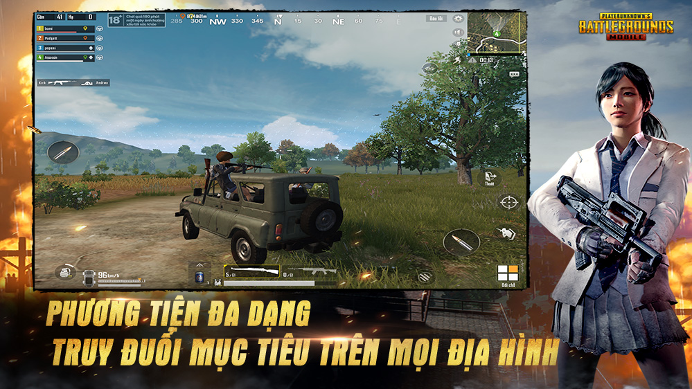

Free Fire là tựa game bắn súng sinh tồn. Mỗi trận đấu gồm 50 người chơi ở trong 1 hòn đảo duy nhất, họ có thể khám phá bản đồ, ẩn nấp hoặc tìm kiếm và giao tranh với những người chơi khác. Tất cả vì một mục tiêu duy nhất "Sống dai thành huyền thoại" Có nhiều chế độ chơi khác ngoài chế độ sinh tồn ở trong Free Fire. Tử chiến là một chế độ chơi cũng nổi không kém chế độ sinh tồn. Chế độ này chia người chơi thành 2 đội, mỗi đội 4 người và sắp xếp họ vào trong 1 đấu trường nhỏ nơi mà họ có thể chiến đấu qua các vòng để xác định đội thắng cuộc. Các chế độ chơi khác bao gồm chế độ Kẻ mạo danh - một chế độ chơi linh hoạt nơi mà người chơi người cần sử dụng trí tuệ để chiến thắng.
